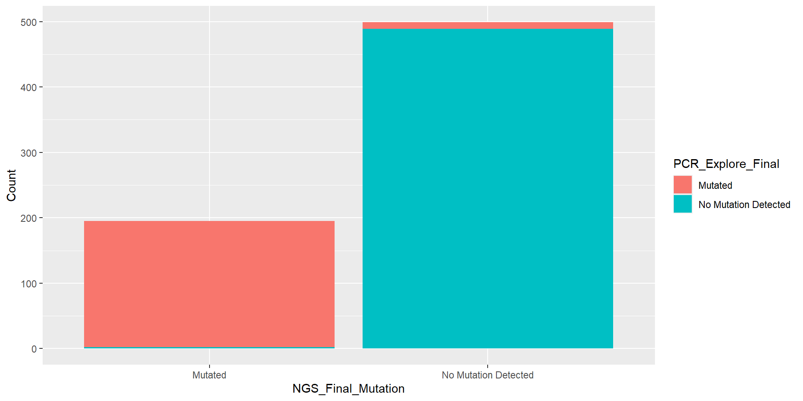
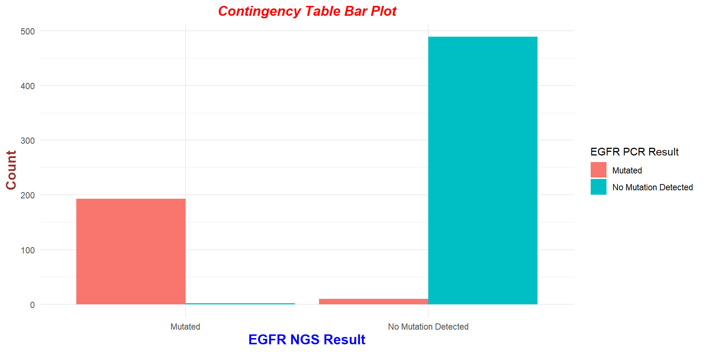
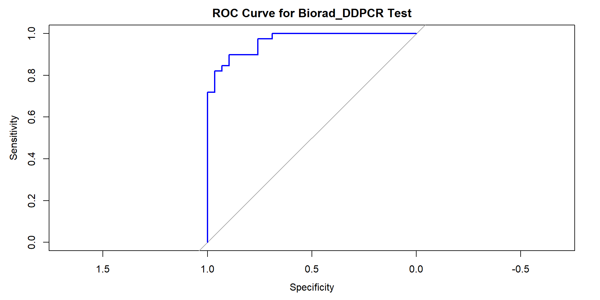
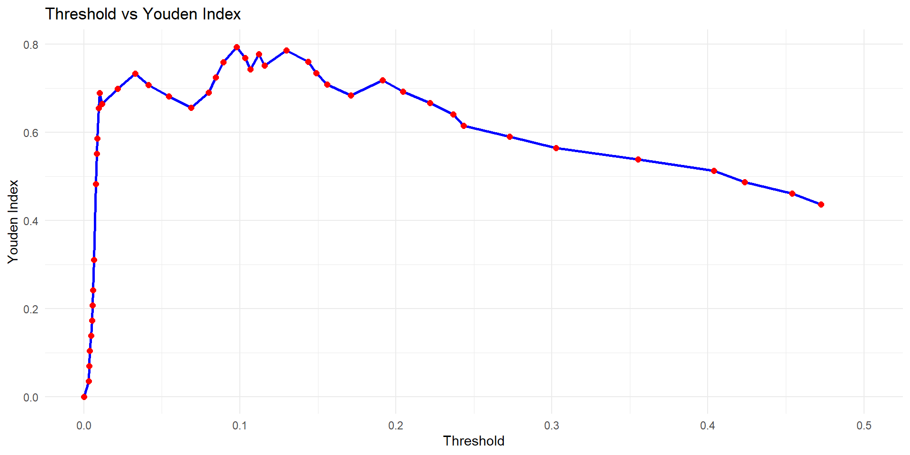
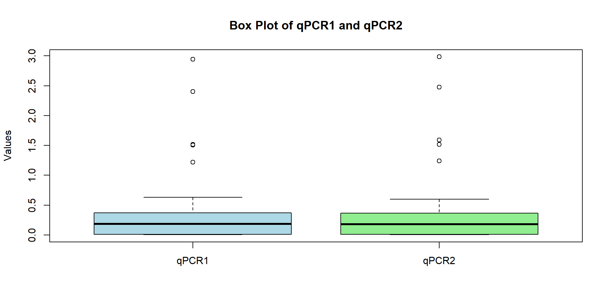
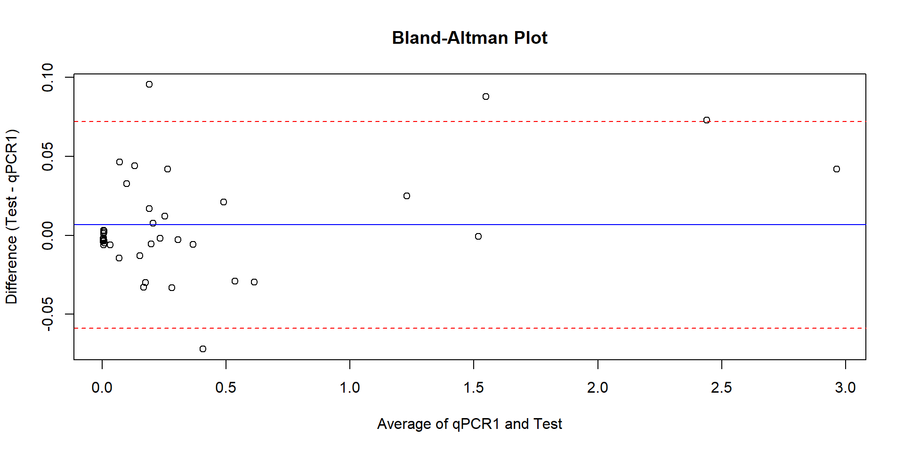
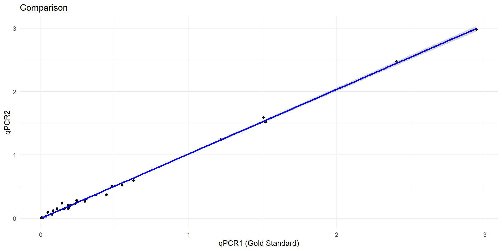

Sample.Number NGS_Final.Mutation PCR_Explore_Final
1 Sample 001 Mutated Mutated
2 Sample 002 No Mutation Detected No Mutation Detected
3 Sample 003 No Mutation Detected No Mutation Detected
4 Sample 004 No Mutation Detected No Mutation Detected
5 Sample 005 No Mutation Detected No Mutation Detected
6 Sample 006 Mutated MutatedAMP 2024 Course
Defining analytical goals
The purpose of a test is to diagnose a condition or assess an analyte with acceptable accuracy and precision. The process of validation starts with setting analytical goals also known as setting the ‘Acceptability Criteria’.
The acceptability criteria should state clear goals for levels of accuracy and precision. Accuracy and precision goals are defined differently for qualitative and quantitative tests. For quantitative tests, the criteria should also include reportable range and reference intervals.
Required performance characteristics with suggested studies needed before implementation of FDA-approved/cleared tests and laboratory-developed tests
Reportable Range; linearity study for quantitative assays
Analytical sensitivity; limit of detection study
Precision; replication experiment
Analytical specificity; interference study
Accuracy; comparison of methods study
Reference interval
Acceptability criteria for qualitative tests:
Qualitative tests usually return a binary response (e.g. detected vs. not detected or positive vs. negative), or rarely they can have more than two categorical responses.
| Condition Positive | Condition Negative | |
| Test Positive | True Positive (TP) | False Positive (FP) |
| Test Negative | False Negative (FN) | True Negative (TN) |
Common Acceptability Criteria
1 - Accuracy: How true is the result of the test when compared to the condition status of the test subjects.
\(Accuracy = TP + TN / TP + TN + FP + FN\)
2- Diagnostic Sensitivity: The proportion of the test subjects with the target condition whose test result is positive.
\(Sen= TP / TP + FN\)
3- Diagnostic Specificity: The proportion of individuals without the target condition who test negative
\(Spe = TN / TN + FP\)
Let’s look at some examples:
The data of our test (PCR) and our gold standard (NGS) are presented in two different columns. Lets first change this into a contingency table so that we can have a visual inspection of the accuracy metrics.
Mutated No Mutation Detected
Mutated 193 2
No Mutation Detected 10 489As you can see our TP number is 193 and our TN number is 489 with small FP and FN numbers. This suggests a high accuracy. Now, let’s calculate the accuracy metrics:
$accuracy
[1] 0.9827089
$sensitivity
[1] 0.9897436
$specificity
[1] 0.9799599Visualizing Accuracy Data
Another way to inspect the data is to visualize it. We are going to use a very useful library from R called the ‘ggplot’ to achieve this.
The ggplot package in R is a powerful plotting tool. It’s easy to use and allows you to make complex plots with rather simple syntax.
“gg” stands for graphical grammar.
Let’s start by loading the packages (or installing them first if you don’t have them installed already):
Plotting using ‘ggplot’ is based on adding layers. The first layer provides the code for the X and Y coordinates and determines the source of data for these coordinates. This layer is called the ‘aes’ layer.
The next step is to add the type of plot we want to display. We have different options, however, here we want to create a bar plot. To do this, we are going to add a bar plot layer using the “geom_bar” syntax. There are many other “geom” options which can be used based on your data and what you want to display (e.g. geom_point creates a scatterplot).
Remember, we use ‘+’ to connect lines of code in R that need to be run as one code.

We can add layers to the plot to include labels and make it more visually pleasing. Let’s try this again:

Measuring Agreement
We can also measure agreement between the two assays. To this we use a statistics called ‘Cohen’s Kappa’.
Cohen’s kappa is a statistical measure used to evaluate the level of agreement between two raters or two tests that classify items into mutually exclusive categories. It accounts for the possibility of agreement occurring by chance. The kappa value ranges from -1 to 1, where:
1 indicates perfect agreement,
0 indicates agreement no better than chance,
Negative values indicate disagreement.
Higher kappa values suggest better reliability, with commonly accepted thresholds indicating slight, fair, moderate, substantial, and almost perfect agreement. Kappa is an aggregate measure calculated from observed agreement and expected agreements.
\(kappa=\frac{P_o - P_e} {1 - P_e}\)
where:
- \(P_o\) is the observed proportion of agreement between the two raters.
- \(P_e\) is the expected proportion of agreement by chance, calculated as:
\(P_e= \sum_{i} (P_{A_i} \times P_{B_i})\)
where:
- \(P_{A_i}\) is the probability that test A assigns a particular category
- \(P_{b_i}\) is the probability that test B assigns a particular category
As you can see it is rather a complex calculation. You can write this formula in R to calculate the Kappa.
[1] 0.9577349This is rather cumbersome, the good news is that for most statistical tests, a package already exists that can help us. For the Kappa agreement, we can use the ‘irr’ package
NGS_Final.Mutation PCR_Explore_Final
1 Mutated Mutated
2 No Mutation Detected No Mutation Detected
3 No Mutation Detected No Mutation Detected
4 No Mutation Detected No Mutation Detected
5 No Mutation Detected No Mutation Detected
6 Mutated Mutated Cohen's Kappa for 2 Raters (Weights: unweighted)
Subjects = 694
Raters = 2
Kappa = 0.958
z = 25.2
p-value = 0 Setting cutoffs for semiquantitative tests
In the laboratory, semi-quantitative tests are also considered as qualitative tests for validation purposes. These semi-quantitative tests measure a quantitative value but report a categorical result based on set cutoffs (e.g. when levels of viral DNA are measured but the result is reported as positive or negative based on a set cutoff).
In these tests, cut-off values must be determined that will set apart the affected from unaffected. Determining cut-off values will depend on:
- The distribution of the values among unaffected and diseased individuals
- The desired sensitivity and specificity levels
In a perfect test, the outcome values for the affected and unaffected population will have no overlap. There is, however, always a degree of overlap between the two population making the decision of a cutoff value very important as different cutoff values will lead to different sensitivity and specificity levels.

Receiver operating characteristic curve (ROC)
Receiver operating characteristic curve (ROC) is the graphical illustration of true positive rate (sensitivity) as the Y-axis and false positive rate (1-specificity) as the X-axis. Consequently, the ROC curve shows the trade-off between sensitivity and specificity.
The basic concept behind the ROC curve is that a test variable (test outcome) is compared with a classifier gold standard and at different cutoff values for the test variable true positive rate and false positive rate are calculated and plotted as Y-axis and X-axis respectively.
ROC space is a square with X- and Y-axis range of 0 to 1. A diagonal line connects the top right corner of the space to the bottom left corner. This line is called the line of no-discrimination and depicts a complete random association of the test variable with the classifier. The perfect classification point in the ROC space (100% specificity and sensitivity) lies at the top left corner of the space.
The further the ROC curve moves away from the diagonal line towards the top left corner the better the classification properties of the test variables will be.

Let’s look at an example. In this example, we have digital droplet PCR reads and true infection status of samples.
Sample_Number Biorad_DDPCR GS_Infection_Status
1 Sample001 0.0080 Negative
2 Sample002 0.0080 Negative
3 Sample003 0.0083 Negative
4 Sample004 0.1046 Positive
5 Sample005 0.0090 Negative
6 Sample006 0.0100 NegativeNow, let’s create the ROC curve. To do this, we are going to use a package called ‘pROC’.
Sample_Number Biorad_DDPCR GS_Infection_Status
1 Sample001 0.0080 0
2 Sample002 0.0080 0
3 Sample003 0.0083 0
4 Sample004 0.1046 1
5 Sample005 0.0090 0
6 Sample006 0.0100 0
Area under the curve: 0.9629Determining cutoffs
The area under the curve is is 0.9629 which is really good and indicates high accuracy. However, on its own, it does not provide us with the cutoff to set apart positive samples from negative samples.
For determination of the cutoff value, two approaches can be undertaken. In the first approach, a decision must be made on the optimal level of sensitivity and specificity on the ROC curve and the cutoff value extracted from the table of curve coordinates which shows the corresponding test value for each curve coordinate. This manual search for the cutoff value allows for choices such as choosing a cutoff for screening (high sensitivity) or for confirmation (high specificity).
The ‘pROC’ package can provide us this coordinates table.
threshold sensitivity specificity
1 -Inf 1.00000000 0.00000000
2 0.00310 1.00000000 0.03448276
3 0.00350 1.00000000 0.06896552
4 0.00380 1.00000000 0.10344828
5 0.00445 1.00000000 0.13793103
6 0.00515 1.00000000 0.17241379
7 0.00545 1.00000000 0.20689655
8 0.00580 1.00000000 0.24137931
9 0.00650 1.00000000 0.31034483
10 0.00750 1.00000000 0.48275862
11 0.00815 1.00000000 0.55172414
12 0.00865 1.00000000 0.58620690
13 0.00950 1.00000000 0.65517241
14 0.01005 1.00000000 0.68965517
15 0.01155 0.97435897 0.68965517
16 0.02150 0.97435897 0.72413793
17 0.03300 0.97435897 0.75862069
18 0.04150 0.94871795 0.75862069
19 0.05430 0.92307692 0.75862069
20 0.06880 0.89743590 0.75862069
21 0.08000 0.89743590 0.79310345
22 0.08450 0.89743590 0.82758621
23 0.08925 0.89743590 0.86206897
24 0.09775 0.89743590 0.89655172
25 0.10330 0.87179487 0.89655172
26 0.10680 0.84615385 0.89655172
27 0.11210 0.84615385 0.93103448
28 0.11590 0.82051282 0.93103448
29 0.12980 0.82051282 0.96551724
30 0.14380 0.79487179 0.96551724
31 0.14880 0.76923077 0.96551724
32 0.15600 0.74358974 0.96551724
33 0.17100 0.71794872 0.96551724
34 0.19150 0.71794872 1.00000000
35 0.20440 0.69230769 1.00000000
36 0.22190 0.66666667 1.00000000
37 0.23675 0.64102564 1.00000000
38 0.24325 0.61538462 1.00000000
39 0.27300 0.58974359 1.00000000
40 0.30250 0.56410256 1.00000000
41 0.35515 0.53846154 1.00000000
42 0.40370 0.51282051 1.00000000
43 0.42355 0.48717949 1.00000000
44 0.45390 0.46153846 1.00000000
45 0.47240 0.43589744 1.00000000
46 0.51500 0.41025641 1.00000000
47 0.58900 0.38461538 1.00000000
48 0.62885 0.35897436 1.00000000
49 0.64135 0.33333333 1.00000000
50 0.69505 0.30769231 1.00000000
51 0.81775 0.28205128 1.00000000
52 1.05770 0.25641026 1.00000000
53 1.27950 0.23076923 1.00000000
54 8.19600 0.20512821 1.00000000
55 16.49000 0.17948718 1.00000000
56 23.67500 0.15384615 1.00000000
57 29.63000 0.12820513 1.00000000
58 51.94000 0.10256410 1.00000000
59 79.40500 0.07692308 1.00000000
60 118.28500 0.05128205 1.00000000
61 151.83000 0.02564103 1.00000000
62 Inf 0.00000000 1.00000000Looking at the table, if we want a very sensitive assay for screening then the cutoff can perhaps be set at 0.02150 corresponding to 97.4% sensitivity and 72.4% specificity. If we want a very specific assay then the cutoff can be set at 0.19150 corresponding to 71.79% sensitivity and 100% specificity.
If sensitivity and specificity are given equal weights, then a ROC curve analysis can be employed to determine the optimal cutoff value. Several methods of ROC curve analysis have been established. One of the oldest and simplest methods is called the Youden’s index. This index calculated as the difference of the sum of sensitivity and specificity from 1.
\(Youden's\ Index =\ (Sen + Spe) - 1\)
We can simply calculate this:
threshold sensitivity specificity youden
1 -Inf 1 0.00000000 0.00000000
2 0.00310 1 0.03448276 0.03448276
3 0.00350 1 0.06896552 0.06896552
4 0.00380 1 0.10344828 0.10344828
5 0.00445 1 0.13793103 0.13793103
6 0.00515 1 0.17241379 0.17241379and visualize it:

However, the package has simplified the process and can provide us with this value:
[1] "Best cutoff value: 0.09775"Measuring Agreement between Quantitative Assays
The general approach for method comparison for quantitative tests involves either running 20-40 samples with known values or concurrently running 20-40 samples on the validated test and a gold standard test.
The first steps in evaluating quantitative data is to show it’s summary metrics, such as average, median, and standard deviation.
qPCR1 qPCR2
1 0.006 0.0037
2 0.006 0.0070
3 0.007 0.0053
4 0.005 0.0083
5 0.007 0.0100
6 0.009 0.0056 mean median range_min range_max sd
0.3969895 0.1840000 0.0050000 2.9420000 0.6652805 mean median range_min range_max sd
0.4036605 0.1773000 0.0029000 2.9840000 0.6787962 It can also help if we visualize the data. For example, let’s do a boxplot.

Linear Correlation Test
The results are then compared by running a linear correlation test. These results can also be inspected visually using a comparison plot which is essentially a linear correlation plot.
If the results have high linearity with a one to one agreement, then an alternative approach is to use a ‘difference plot’ which shows the difference of the test versus the comparison on the Y-axis and the results of comparative method on the X-axis. The difference points should scatter around 0 on the Y-axis.
Let’s look at an example.

[1] "Pearson's correlation coefficient: 0.999"
Call:
lm(formula = qPCR2 ~ qPCR1, data = data)
Residuals:
Min 1Q Median 3Q Max
-0.079557 -0.013277 -0.002429 0.007375 0.093721
Coefficients:
Estimate Std. Error t value Pr(>|t|)
(Intercept) -0.0009747 0.0059355 -0.164 0.87
qPCR1 1.0192593 0.0077368 131.742 <2e-16 ***
---
Signif. codes: 0 '***' 0.001 '**' 0.01 '*' 0.05 '.' 0.1 ' ' 1
Residual standard error: 0.03131 on 36 degrees of freedom
Multiple R-squared: 0.9979, Adjusted R-squared: 0.9979
F-statistic: 1.736e+04 on 1 and 36 DF, p-value: < 2.2e-16
Running a linear correlation on the results will also provide you with the standard deviation of the points around the fitted line, the confidence interval of the slope, the ‘correlation coefficient’ (also known as ‘Pearson’s r coefficient’) as well as a p-value.
A significant p-value is needed to say that there is linear correlation. In other words, a significant p-value is the first thing you should look at in the method comparison experiment which will tell you if the new test is useful for measuring the target analyte. Thus, a significant p-value is what you need for validation.
The next step is to look at the correlation coefficient to determine if there is any systematic error. Pearson’s r coefficient shows how well the compared results change together and can have values of between -1 and 1. The closer the value is to 1, the higher the correlation.
The R-squared value is a measure of how well the regression line fits the data. It represents the proportion of the variance in the dependent variable that is explained by the independent variable.
t-test for method comparison experiments
The t-test should be run to determine if the mean of the two sets of results is the same or in other words t-test can determine if there is any systematic error (bias) in the mean of the two sets of values. In most method comparison experiments it is best to use a paired t-test, since the same sample is being compared using two different methods (and thus a degree of similarity of the means expected and running an unpaired t-test will fail to detect the bias). If the t-test returns a non-significant value, then there is no systematic error.
If the t-test returns a significant p-value, then it shows that there is a significant bias (systematic error) in the mean of the two sets of values. If the t-test is significant, then you should go back to the linear regression equation to determine whether the source of the bias is the constant or the slope. Constant error is easily remedied by adding the constant to the new test results. However, for proportional errors ‘recovery experiments’ are needed.
Paired t-test
data: data$qPCR1 and data$qPCR2
t = -1.2299, df = 37, p-value = 0.2265
alternative hypothesis: true mean difference is not equal to 0
95 percent confidence interval:
-0.01766097 0.00431886
sample estimates:
mean difference
-0.006671053 As you can see, the t-test returned a significant p-value indicating that the two measurements’ average are not the same. This indicates a systemic bias is not present.
F-test for precision:
‘F-test’ or analysis of variance compares the variance of the test method with the comparative method. In simple terms, F-test shows whether the variation observed in the test values is different from the variations observed for the comparative value. If no random error exists, you would expect the variations of the two sets of result to be similar i.e. any variation observed in the test result is caused by actual variation of the sample value rather than due to error. F-test for two variances is a simpler form of the ANOVA equation.
If the p-value shows no significance then we can state that the random error in the test is not more than the random error of the comparison method, conversely, a significant p-value signifies the existence of significant random error in addition to the random error of the comparison method.
An advantage of running the linear regression model in r is that it automatically calculate the F-test.
Call:
lm(formula = qPCR2 ~ qPCR1, data = data)
Residuals:
Min 1Q Median 3Q Max
-0.079557 -0.013277 -0.002429 0.007375 0.093721
Coefficients:
Estimate Std. Error t value Pr(>|t|)
(Intercept) -0.0009747 0.0059355 -0.164 0.87
qPCR1 1.0192593 0.0077368 131.742 <2e-16 ***
---
Signif. codes: 0 '***' 0.001 '**' 0.01 '*' 0.05 '.' 0.1 ' ' 1
Residual standard error: 0.03131 on 36 degrees of freedom
Multiple R-squared: 0.9979, Adjusted R-squared: 0.9979
F-statistic: 1.736e+04 on 1 and 36 DF, p-value: < 2.2e-16